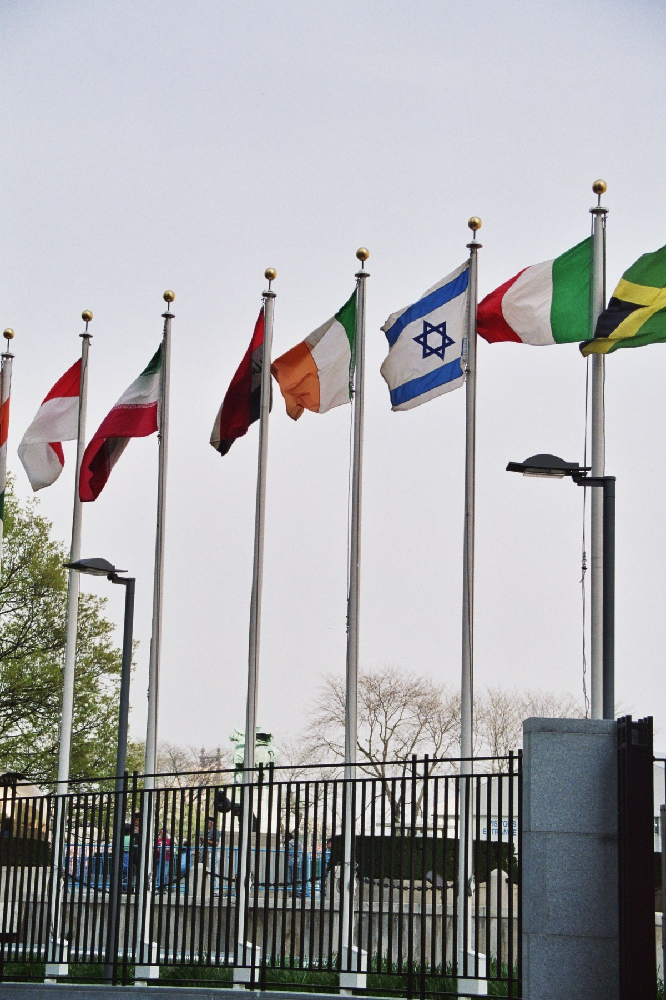

Uzbekistan's international recognition and UN membership (1991–1992)
How the world recognized Uzbekistan after the declaration of independence (31 August 1991): Turkey first (16 December 1991), the USA (25 December 1991), the CIS (Alma-Ata, 21 December 1991), UN membership (2 March 1992, on the same day as seven other former Soviet republics), and the IMF and World Bank (21 September 1992). Sourced history with exact dates.

Uzbekistan declared independence on 31 August 1991. Over the following year the state emerged onto the international stage: dozens of countries recognized it, diplomatic relations were established, and Uzbekistan joined major international organizations. Below this process is set out with exact dates, on the basis of sources.
The declaration of independence
On 31 August 1991, at an extraordinary session of the Supreme Council, independence was declared and the state was renamed from the “Uzbek SSR” to the “Republic of Uzbekistan”; Independence Day is celebrated on 1 September. The Soviet Union was formally dissolved on 26 December 1991. It was precisely in this period — as the USSR was breaking apart — that the world community began to recognize the new independent state.
The first recognitions
Turkey was the first to recognize Uzbekistan's independence — on 16 December 1991. A few days later, on 25 December 1991, the USA recognized Uzbekistan's independence (President George H.W. Bush, in his address on the dissolution of the USSR). Diplomatic relations with the United Kingdom were established on 18 February 1992. In this way many states formally recognized the new republic within a short period.
Diplomatic relations and embassies
Diplomatic relations with the USA were established on 19 February 1992; the US Embassy in Tashkent opened on 16 March 1992 (with Michael Mozur as chargé d'affaires ad interim). Turkey was among the first states to open an embassy in Tashkent. The opening of embassies cemented in practice Uzbekistan's recognition as an international actor.
The CIS and cooperation in Europe
On 21 December 1991 Uzbekistan signed the Alma-Ata Protocol, becoming a founding member of the Commonwealth of Independent States (CIS); the protocol was signed by eleven former Soviet republics in all. In January 1992 Uzbekistan became a participating state of the Conference on Security and Co-operation in Europe (later the OSCE) (the Prague meeting, 30–31 January 1992).
UN membership
On 29 January 1992 the UN Security Council adopted Resolution 737, recommending Uzbekistan for membership. Uzbekistan was formally admitted to the United Nations on 2 March 1992. On that same day — 2 March — seven other former Soviet republics (Armenia, Azerbaijan, Kazakhstan, Kyrgyzstan, Moldova, Tajikistan, and Turkmenistan) also joined the UN. This was the most important international recognition for Uzbekistan.
Financial institutions and the OIC
On 21 September 1992 Uzbekistan joined the International Monetary Fund (IMF) and the World Bank (IBRD) on the same day — opening the way for economic reforms and external financing. Uzbekistan also joined the Organisation of Islamic Cooperation (OIC) in 1992. In this way, within the first year of independence the state integrated into the main political, economic, and regional structures.
Historical significance
The span from December 1991 to September 1992 was the formative period of Uzbekistan's foreign policy: from Turkey's first recognition (16 December 1991) to UN membership (2 March 1992) and joining the financial institutions (21 September 1992). These steps anchored the declared independence in international legal status and made Uzbekistan a full member of the world community.